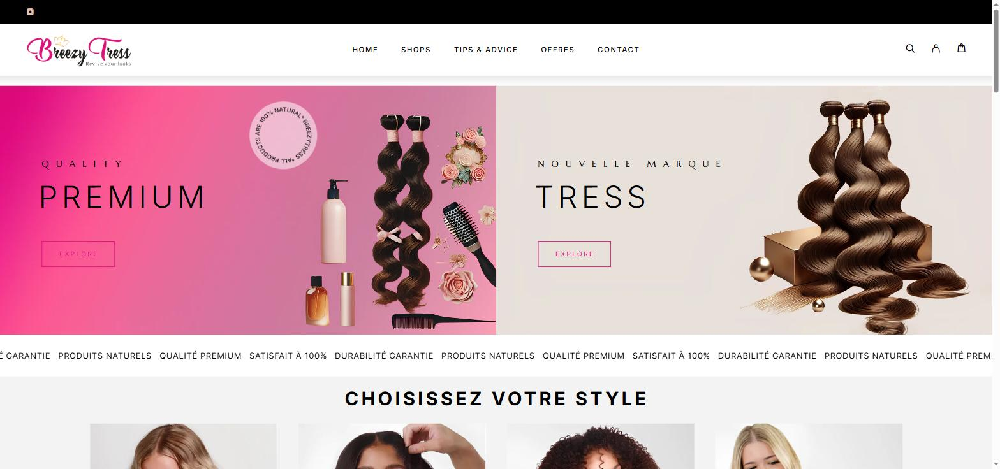
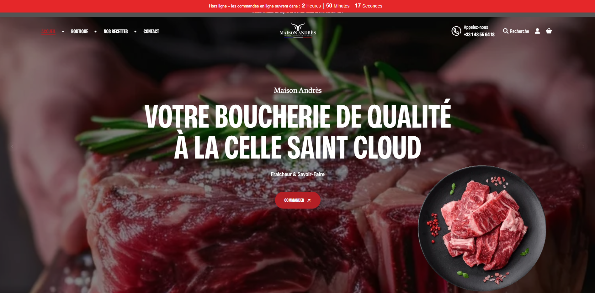
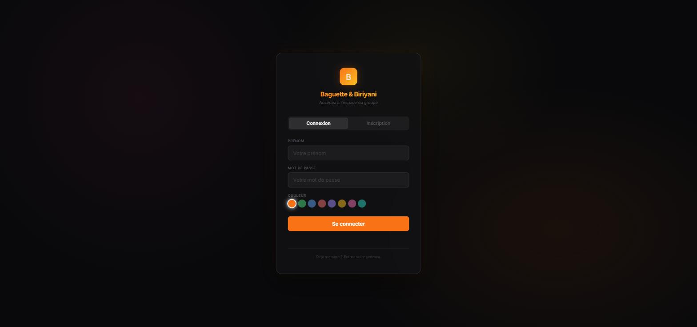

{kind=link}

{kind=link}

{kind=link}

Présentation
Cette réalisation n’est pas un projet unique mais une activité : depuis 2023, une auto-entreprise de prestation web qui conçoit et livre des sites WordPress et des applications PHP/MySQL sur mesure pour des clients variés (commerçants, indépendants, associations). J’assume le cycle complet : cadrage du besoin, devis, développement, déploiement, formation du client, puis maintenance et support dans la durée.
Objectifs, contexte, enjeux et risques
Le contexte : une activité indépendante développée en parallèle des études puis de l’alternance, née de premières demandes de l’entourage professionnel et associatif. L’objectif : livrer à des structures modestes des outils réellement utiles, dimensionnés à leur budget, et construire, projet après projet, une activité destinée à durer. Les enjeux : la crédibilité (un indépendant n’a pas de marque derrière lui, seulement ses livraisons) et la récurrence, qui transforme des prestations ponctuelles en activité viable. Les risques : la dispersion entre études, alternance et clients, la sous-facturation, classique en début d’activité, et les engagements de maintenance qui s’accumulent et engagent l’avenir.
Les étapes
Chaque projet suit le même chemin, affiné au fil des livraisons. Le cadrage d’abord : transformer un besoin flou (« il me faudrait un site ») en périmètre écrit et validé. Puis le choix d’outil, assumé et expliqué : WordPress quand le besoin relève de la présence en ligne et de la gestion de contenu, développement PHP/MySQL sur mesure quand le métier du client l’exige. Vient le devis (périmètre, délais, options chiffrées), puis la réalisation, la recette avec le client sur des cas réels, la mise en ligne, la formation, et enfin le cadre de maintenance qui organise la suite de la relation.
Les acteurs
Les clients (commerçants, indépendants, associations) sont les commanditaires directs, et leurs propres clients ou visiteurs les destinataires finaux : un site livré travaille toujours pour deux publics à la fois. En face, un prestataire unique qui assume tous les rôles : commercial, chef de projet, développeur, formateur et support. Cette solitude structurelle est à la fois la contrainte et l’école de l’activité indépendante.
Les résultats
Pour les clients : des outils en production qu’ils administrent en autonomie, dont un site qui soutient une activité générant environ 4 000 $ de chiffre d’affaires mensuel, preuve concrète que le travail livré crée de la valeur économique. Pour moi : des revenus complémentaires, mais surtout un apprentissage que ni l’école ni l’entreprise n’offrent sous cette forme (vendre, cadrer, facturer, assumer seul un engagement) et la constitution progressive d’un portefeuille de clients fidèles qui recommandent.
Les lendemains du projet
Dans le futur immédiat : entretenir la fidélité par la qualité du support et les évolutions demandées. À distance : structurer l’activité (offres packagées, contrats de maintenance formalisés, processus d’accueil des nouveaux clients) pour en faire l’un des piliers de mon projet professionnel, aux côtés du métier d’ingénieur salarié. Aujourd’hui : l’activité est vivante et volontairement sélective, le rythme de l’alternance imposant de choisir ses projets.
Mon regard critique
Mes premiers devis étaient sous-évalués : apprendre à estimer sa valeur est une compétence en soi, que j’ai acquise en la payant. La formalisation systématique des périmètres est née, elle aussi, d’une leçon vécue : sans écrit, chaque projet glisse. Enfin, la distinction assumée entre intégration WordPress et développement sur mesure, que je voyais d’abord comme un aveu de complexité, s’est révélée un argument de confiance décisif : recommander l’outil le plus simple, y compris le moins facturable, est le meilleur investissement commercial qui soit.
Compétences rattachées
Les compétences que cette réalisation met en œuvre, issues de la matrice compétences ↔ réalisations du portfolio.
-
T1 — Développement web full-stack (PHP, MySQL, JavaScript) (7,5/10)
Concevoir et faire vivre des applications web complètes, de la base de données à l’interface : back-offices métier, CMS sur mesure, sites clients.
-
T4 — Intégration et personnalisation WordPress (7/10)
Livrer des sites professionnels rapidement avec WordPress, et savoir quand le sur-mesure s’impose à la place du CMS.
-
H1 — Autonomie et capacité d’auto-formation (8/10)
Monter seul en compétence sur un outil, un langage ou un domaine inconnu, puis transformer cet apprentissage en résultat concret.
-
H2 — Écoute et traduction des besoins métier en solutions (7,5/10)
Comprendre le problème réel derrière la demande exprimée, et le traduire en solution adaptée à des interlocuteurs non techniques.
-
H4 — Relation client et sens du service (7/10)
Porter une relation de confiance dans la durée : cadrage, devis, livraison, support, avec le souci constant du service rendu.
Dans la constellation du portfolio
Le schéma ci-dessous replace cette page dans la navigation circulaire du portfolio : chaque nœud est un lien cliquable.